# 绪论
# 基本概念和术语
# 数据
数据是信息的载体，是描述客观事物属性的数、字符及所有能输入到计算机中并被计算机程序是被和处理的符号的集合。
# 数据元素
数据元素是数据的基本单位，通常作为一个整体进行考虑和处理。一个人的话剧遇上年度可由若干数据项组成，数据项是构成数据元素的不可分割的最小单位。
# 数据对象
数据对象是具有相同性质的数据元素的集合，是数据的一个子集。
# 数据类型
数据类型是一个值的集合和定义在此集合上的一组操作的总称。
1）原子类型：其值不可再分的数据类型。
2) 结构类型：其值可以再分解为若干成分的数据类型。
3）抽象数据类型：抽象数据组织与之相关的操作。
# 数据结构
数据结构是相互之间存在一种或多种特定关系的数据元素的集合。在任何问题中数据元素都不是孤立的，它们之间存在着某种关系，这种数据元素相互之间的关系成为结构。数据结构包括三方面的内容：逻辑结构，存储结构和数据的运算。
一个算法的设计取决于所选定的逻辑结构，而算法的实现依赖于所采用的存储结构。
# 数据结构三要素
# 数据的逻辑结构
逻辑结构是指数据元素之间的逻辑关系，从逻辑关系上描述数据，它与数据的存储无关，是独立于计算机的。

集合：结构中的数据元素除同属于一个集合之外，没有别的关系。
线性结构：结构中的数据元素之间只存在一对一的关系。
树形结构：结构中的数据元素之间存在一对多的关系。
图状结构或网状结构：结构中的数据元素之间存在多对多的关系。
# 数据的存储结构
存储结构是指数据结构在计算机中的表示（又称映像），也称物理结构，他包括数据元素的表示和关系的表示。数据的存储结构是用计算机语言实现的逻辑结构，它依赖于计算机语言，数据的存储结构主要有顺序存储、链式存储、索引存储和散列存储。
1）顺序存储。把逻辑上相邻的元素存储在物理位置上也相邻的存储单元中，元素之间的关系由存储单元的邻接关系来体现。其优点是可以实现随机存取，每个元素占用最少的存储空间。缺点是只能使用相邻的一整块存储单元，因此可能产生较多的外部碎片。
2）链式存储。不要求逻辑上相邻的元素在物理位置上也相邻，借助指示元素存储地址的指针表示元素之间的逻辑关系。其优点是不会出现碎片现象，能充分利用存储空间，缺点是每个元素因存储指针而占用额外的存储空间，且只能实现顺序存取。
3) 索引存储。在存储元素信息的同时还建立了附加的索引表，索引表中的每项称为索引项，索引项的一般形式是（关键字，地址）。其优点是检索速度快，缺点是附加的索引表额外占用存储空间，修改索引表也花费较多的时间。
4) 散列存储。根据元素的关键字直接计算出该元素的存储地址，又称哈希存储，其优点是检索，增加和删除节点的操作都很快，缺点是若散列函数不好，可能会出现冲突。
# 数据的运算
施加在数据上的运算包括运算的定义和实现，运算的定义是针对逻辑结构的，指出运算的功能，运算的实现是针对存储结构的，指出运算的具体操作步骤。
# 算法的基本概念
算法是对特定问题求解步骤的一种描述，它是指令的序列，其中的每条指令表示一个或多个操作。而且算法还有以下 5 个重要特性。
有穷性：一个算法必须执行有穷步之后结束，且每一步都可在有穷时间内完成。
确定性：算法中每条指令都必须有确切的含义，对于相同的水只能得出相同的输出。
可行性：算法中描述的操作都可以通过已经实现的基本运算执行有限次来实现。
输入：一个算法有零个或多个输入，这些输入取自某个特定的对象的集合。
输出：一个算法有一个或多个输出，这些输出是与输入有某种特定关系的量。
通常一个优秀算法应考虑一下目标：
正确性：算法应能够正确解决问题。
可读性：算法应具有良好的可读性，以便人民理解。
效率与低存储量需求：效率是指算法执行的时间，存储量需求是指算法执行过程中所需要的最大存储空间，这两者都与问题的规模有关。
![image-20211119151040856]image-20211119151040856.png)
# 线性表
线性表的顺序存储结构是一种随机存取（读写）的存储结构，不是顺序存取的存储结构，是顺序存储的村树结构
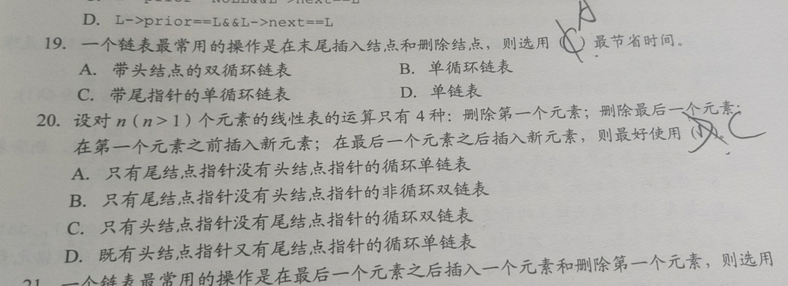
即使带头尾指针，循环单链表页不好删除最后一个节点
# 栈和队列
n 个不同元素进栈，出栈可能为

在用单链表实现队列时，队头设在链表的表头位置（存疑，王道这么说的）
# 栈在表达式中求值的应用
中缀表达式：A+B*（C-D）-E/F
后缀表达式：ABCD-*+EF/-
中缀转后缀：
1. 直接做题可以构造树，并后序遍历就是后缀表示了
2. 用两个栈，并设置符号优先级
执行函数时，局部变量一般采用栈结构
# 特殊矩阵压缩存储
原矩阵下标从 1 开始，目的矩阵下标从 0 开始
# 对称矩阵 (可以直接用三角矩阵包括)
# 三角矩阵
下三角按行
#
上三角按行
# 三对称矩阵
# 串
# 串的存储结构
定长顺序存储
堆分配存储表示：c 语言中存在一个称为堆的自由存储区
块链存储表示
# KMP 算法
kmp 的进一步优化：忘记了感觉以下这个例子：主串（abaabaabca）子串（abaabc）
忘记了就做几道题压压惊
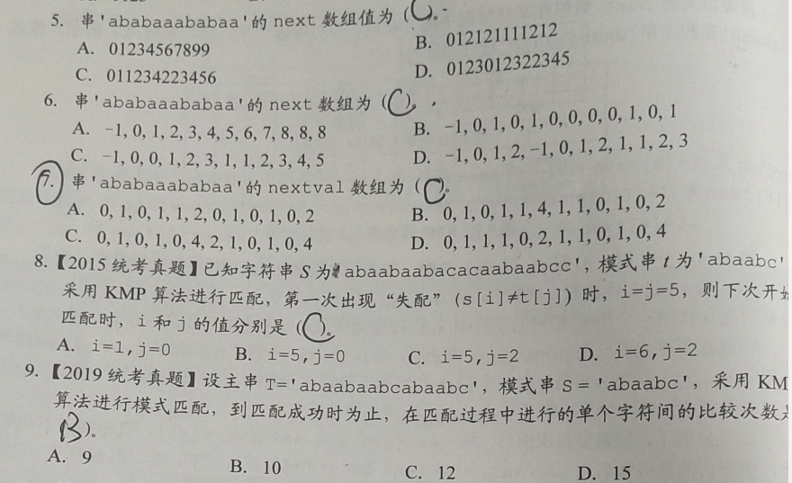
# 树与二叉树
树的路径长度时从树根道每个节点的路径长度的总和
非空二叉树的叶子节点数等于度为 2 的节点数 + 1
度为 2 的有序树不是二叉树
# 线索二叉树
# 建立线索 2 叉树
void InThread(ThreadTree &p，ThreadTree &pre) { | |
if(p! == NULL){ | |
inrhread (p -> lchild,pre); | |
if(p->lchild == NULL){ | |
p->lchild = pre; | |
p->ltag = 1; | |
} | |
if(pre!=NULL &z& pre->rchild==NULL){ | |
pre->rchild = p; | |
pre->rtag = 1; | |
} | |
pre = p; | |
InThread(p->rchild, pre); | |
} | |
} |
森林可以 0 棵树
后序线索二叉树不能有效解决寻找后继
先序线索二叉树不能有效解决寻找前驱（需要栈的支持）
后序树不能完整遍历（需要栈的支持）
树的先根遍历与二叉树的先序遍历一样，森林先序
树的后根遍历与二叉树的中序遍历一样，森林中序
# 平衡二叉树
结点个数最少的平衡二叉树，h 为高度:n (h)=n (h-1)+n (h-2)+1
# 哈夫曼树
WPL 带权路径长度
# 图
线性表可以是空表，树可以是空树，但图不可以是空图
联通分量就是极大联通子图
带权图邻接矩阵，0 和无穷都是无边的意思
有公共子式的表达式，可以用有向无环图来表示，减少空间消耗
DAG 有向无环图，AOV 拓扑排序网
只要无向连通图中没有权值相同的边，则最小生成树唯一，充分条件
只要图中每个顶点的入度出度都为 1，则拓扑序列唯一，充分条件
# 查找
ASL：平均查找长度
# 有序表查找

查找失败 ASL= n/2+n/(n+1)。
# 折半查找法

是平衡二叉树
# 分块查找

若在块内和索引表中均采用顺序查找，则平均查找长度为 (s・s+2・s+n)/2・s
# B 树
1. 若根结点不是终端结点，则至少有 2 棵子树。
2. 除根节点以外的所有非叶结点至少有 M/2 **（向上取整）** 棵子树，至多有 M 个子树（关键字数为 M-1）。
3. 所有的叶子结点都位于同一层。
# B 树的插入和删除
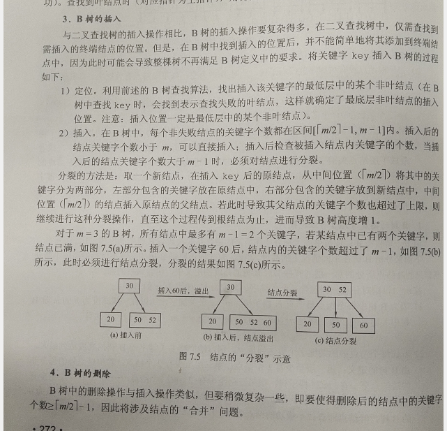
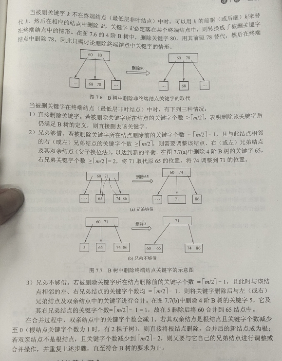
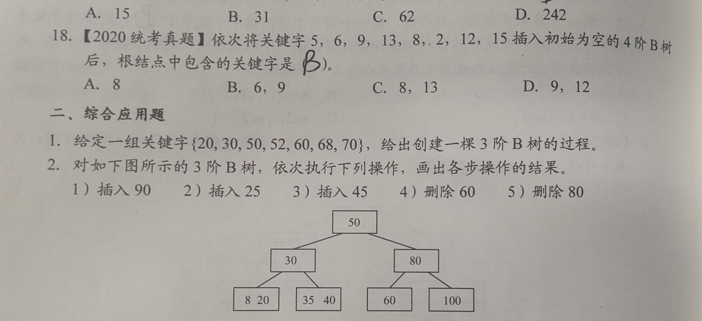
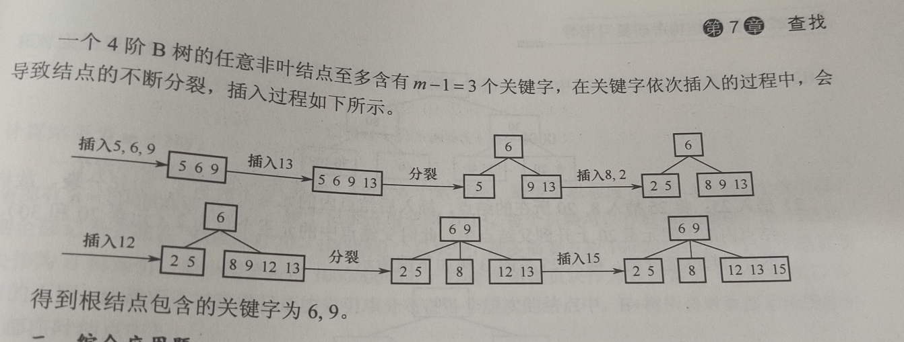
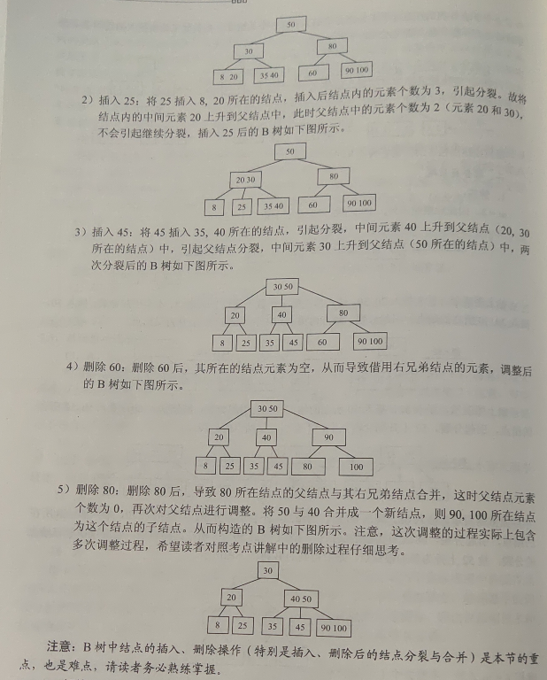
# B + 树
节点的子树数和关键字数相同（B 树是关键字数比子树数少一）
节点的关键字表示的是子树中的最大数，在子树中同样含有这个数据
叶子节点包含了全部数据，同时符合左小右大的顺序

三个特点
关键字数和子树相同
非叶子节点仅用作索引，它的关键字和子节点有重复元素
叶子节点用指针连在一起

B 树和 B + 树支持随机查找
B 树不支持顺序查找和 B + 树支持顺序查找
# 散列表
散列表建立了关键字和存储地址之间的一种直接映射关系
常用的散列函数：
直接定址法
除留余数法
数字分析法：H（key）=key%100000
平房取中法：比如 key=1234 1234^2=1522756 取 227 作 hash 地址
冲突处理
平方探测可避免堆积（由同义词之间或非同义词之间发生冲突）
** 再散列法：** 需要使用两个散列函数，当通过第一个散列函数时 H (key) 得到的地址发生冲突时，则利用第二个散列函数 Hash2 (key) 计算该关键字的地址增量，具体散列函数如下：Hi = (H (key)+iHash2 (key))% m。
初次探测位置 H0 = H (key)% m。i 是冲突次数，初始为 0。在散列法中，最多经过 m-1 次探测就会遍历表中的所有位置，回到 H0 位置。
装载因子 α=n/m (n 表示实际装载数据长度 m 为表长)
平均查找长度依赖于装填因子，不直接依赖于 n 或 m
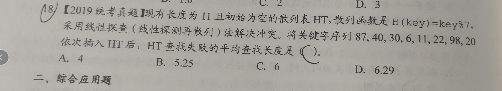
注意平均查找长度，和表长无直接关系

# 排序
拓扑排序不算在排序算法内
希尔排序（缩小增量排序）
n 在某个特定范围时，时间复杂度约为 n^1.3

快速排序是所有排序算法中品军性能最优的

# 外部排序
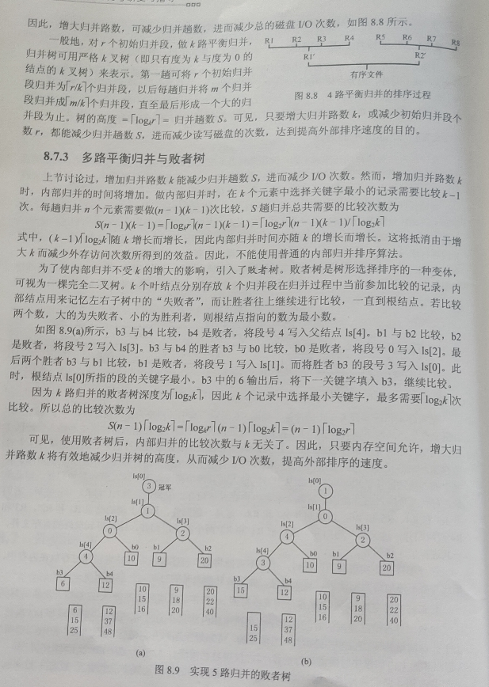
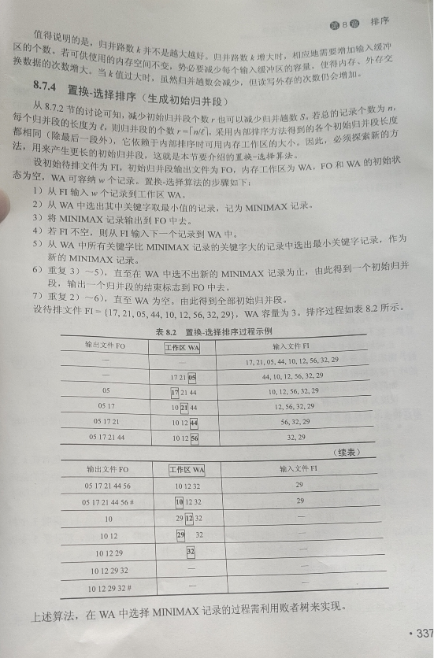
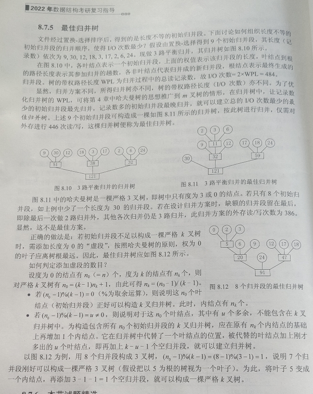